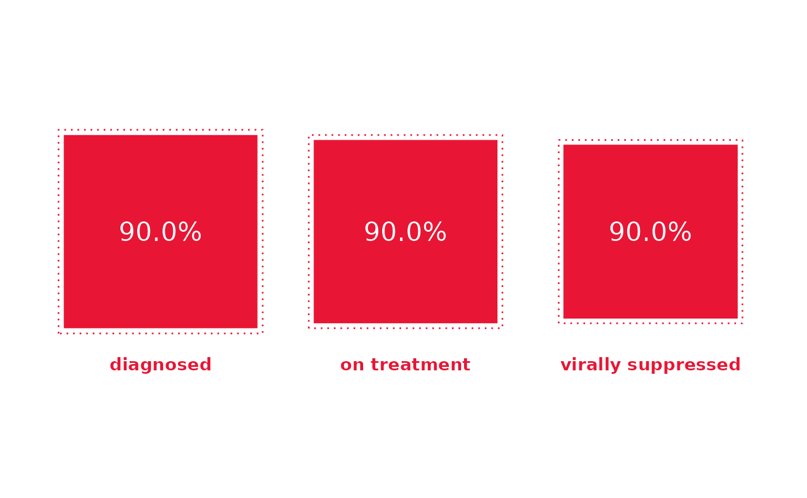

plot the 90-90-90 UNAIDS's target
gg909090(
first = 0.9,
second = 0.9,
third = 0.9,
col = "#E81634",
sub = c("diagnosed", "on treatment", "virally suppressed"),
p_size = 6,
sub_size = 4,
overall = FALSE
)Arguments
- first
value of the first 90
- second
value of the second 90
- third
value of the third 90
- col
colour of the graph
- sub
value of the sub-labels (
NULLto hide)- p_size
text size of the percentages
- sub_size
text size of the sub-labels
- overall
display the overall percentage?
Examples
gg909090()

gg909090(0.782334, .6789, .82, col = "darkblue", overall = TRUE)